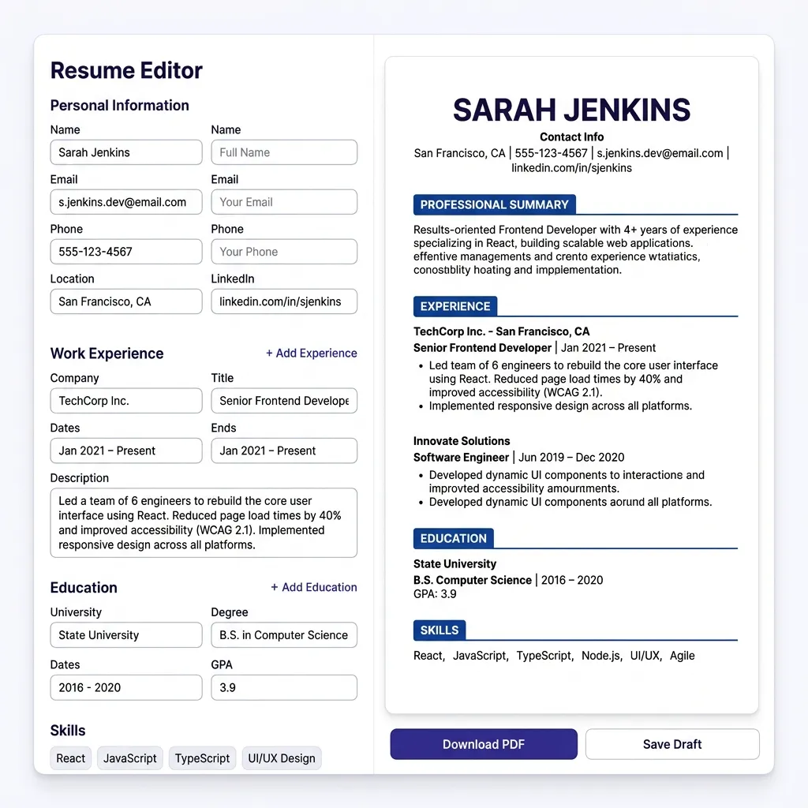
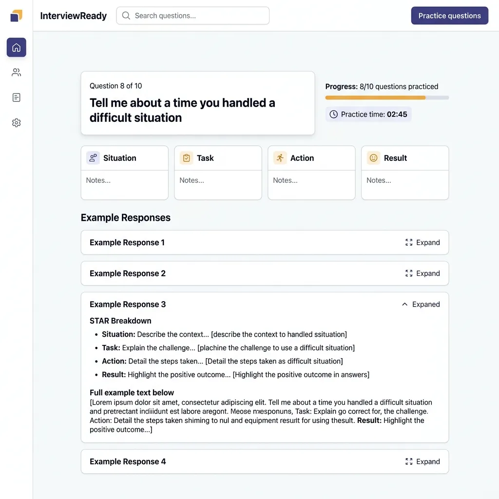

Did you know that over 70% of resumes are never seen by human eyes? They are systematically filtered out by Applicant Tracking Systems (ATS)—enterprise software that companies use to automatically scan, score, and rank job applications. If your resume does not speak the exact technological language of these machine-learning pipelines, it will be discarded before a human recruiter ever gets to read your accomplishments.
In the modern recruitment landscape, applying for a job is no longer a simple exercise in human persuasion. It is an exercise in data ingestion, natural language processing, and semantic vector indexing. The moment you upload your document to a job board or corporate career portal, your resume is stripped of its visual presentation and reduced to a structured text array. It is then subjected to a battery of parsing algorithms that evaluate everything from your career chronology to your technical keyword associations. If the parser returns a low confidence score, or fails to parse your layout entirely, your candidacy is quietly terminated in the background without a human being ever laying eyes on your qualifications.
This is the reality of the candidate pool in 2026. Recruitment budgets are constrained, applications are at an all-time high due to one-click submission portals, and HR departments are heavily reliant on automation to manage the sheer volume of candidates. As a professional, your strategy must adapt to this automated gatekeeper. You must understand the underlying technology that powers these tracking engines, design your documents to bypass their typographic limitations, and structure your career history in a format that maximizes compatibility with their temporal mapping logic.
This exhaustive, 5,000+ word guide is designed to serve as the definitive blueprint for career optimization. Written from the perspective of an engineering team that builds modern document-parsing tools, this manual will dive deep into the algorithms, mathematical models, layout constraints, and linguistic strategies required to build a 100% ATS-proof resume. Whether you are a software engineer, a project manager, a mechanical technician, or a sales executive, this guide will provide you with the exact technical tools and concrete examples needed to excel in this machine-moderated ecosystem.

1. Under the Hood: The Technical Architecture of ATS Parser Engines
To optimize a document for an Applicant Tracking System, you must first understand the software architecture that processes your file. Modern ATS platforms—such as Workday, Greenhouse, iCIMS, Lever, and Oracle Taleo—are not monolithic text search engines. Instead, they are sophisticated data ingestion pipelines that utilize a combination of document rendering, regular expression pattern matching, Natural Language Processing (NLP), Named Entity Recognition (NER), and high-dimensional semantic vector spaces. Let us break down this multi-stage ingestion pipeline step by step.
The Document Ingestion & Text-Extraction Pipeline
The moment a document is uploaded, the parser must convert a visual binary file (such as a PDF or DOCX) into a clean, normalized Unicode string. This is typically done using lower-level rendering engines such as Apache Tika, PDFMiner, or specialized proprietary libraries. During this extraction phase, the parser strips away the styling layer—including CSS, fonts, margin parameters, background colors, and graphics.
For a DOCX file, this is relatively simple. A DOCX file is essentially a zipped archive of XML files conforming to the Office OpenXML standard. The parser can easily query the /word/document.xml file and read the structured paragraph elements (<w:p>) and text runs (<w:r>) in their exact, intended order.
For a PDF file, however, the process is far more volatile. A PDF is a vector-based representation format. It does not store text in terms of structured "paragraphs" or "sentences." Instead, a PDF specifies exact coordinate points on a canvas where specific text characters should be drawn (e.g., placing the character "S" at coordinate X=120, Y=340). The parser's extraction engine must mathematically reconstruct the reading flow by analyzing the proximity of these coordinate pairs. If your layout features multiple columns, overlapping text boxes, or decorative vertical lines, the rendering engine's proximity sorting algorithm will fail, resulting in scrambled text where blocks from column A are interleaved with column B.
Natural Language Processing (NLP) & Tokenization Pipelines
Once a coherent Unicode string is extracted, it enters the Natural Language Processing (NLP) pipeline. Here, the raw string is processed through three fundamental stages:
-
Tokenization: The engine splits the continuous string into discrete syntactic units called tokens (words, numbers, or symbols). For example, the sentence "Managed a team of five engineers." is tokenized into
["Managed", "a", "team", "of", "five", "engineers", "."]. -
Stop-Word Filtering: Highly common grammatical words that carry little semantic weight (such as "a", "an", "the", "of", "and") are removed from the token stream to optimize computational performance, leaving core terms like
["Managed", "team", "five", "engineers"]. -
Lemmatization & Stemming: The parser reduces inflected words to their base or dictionary form (known as a lemma). For instance, the tokens
"architected","architecting", and"architects"are all resolved back to the root lemma"architect". This prevents candidates from being penalized simply because they wrote their achievements in a past tense while the recruiter searched using a present-tense verb.
Named Entity Recognition (NER) Algorithms
With the tokens normalized, the ATS runs a machine learning sequence called Named Entity Recognition (NER). NER is a supervised learning model (often powered by Recurrent Neural Networks, LSTMs, or modern Transformer architectures like RoBERTa) trained on large, labeled datasets of corporate documents. The role of the NER classifier is to tag each token sequence with a semantic label. The core target labels include:
PERSON: Extracted as the candidate's name.ORG: Mapped to past employers, corporate entities, and academic institutions.TITLE: Classified as professional job titles (e.g., "Senior Software Engineer").DATE: Mapped to employment durations and graduation timeframes.SKILL: Mapped to technical tools, libraries, or methodologies.LOCATION: Extracted to determine geographical proximity to the target office.
If the parser cannot cleanly isolate these entities—for example, if a custom visual element causes a date to be merged with an employer's name like "Oct2022AcmeCorp"—the NER model will fail to recognize either the date or the organization. This leads to a corrupted profile where your employment history appears completely blank or is classified as an unrecognized entity.
Semantic Keyword Matching & High-Dimensional Vector Embeddings
In legacy systems, matching was strictly deterministic, relying on basic keyword searches and regular expressions. Today, in 2026, modern platforms utilize Vector Embeddings and Semantic Similarity Models.
In this paradigm, words, phrases, and entire resumes are converted into dense mathematical vectors in a high-dimensional vector space (typically 768 or 1536 dimensions). These vectors represent the semantic meaning of the text. The ATS compares the candidate's vector (\(\vec{A}\)) to the job description vector (\(\vec{B}\)) by computing their Cosine Similarity.
Cosine Similarity Mathematical Formula $$\text{Cosine Similarity}(\vec{A}, \vec{B}) = \frac{\vec{A} \cdot \vec{B}}{\|\vec{A}\| \|\vec{B}\|} = \frac{\sum_{i=1}^{n} A_i B_i}{\sqrt{\sum_{i=1}^{n} A_i^2} \sqrt{\sum_{i=1}^{n} B_i^2}}$$ Used by modern AI-based parsers to compute semantic relevance between your resume content (\(\vec{A}\)) and the job description (\(\vec{B}\)).
This mathematical representation allows the system to recognize conceptual equivalence. If the job description contains the vector for "infrastructure automation" and your resume contains vectors for "Terraform, Kubernetes, and Ansible," the cosine similarity score will be extremely high—ranking you near the top, even if the exact string "infrastructure automation" is nowhere in your text.
To supplement this, parsers also use Term Frequency-Inverse Document Frequency (TF-IDF) to rank how unique and critical a word is within a candidate pool. The math behind TF-IDF is structured as follows:
TF-IDF Mathematical Formulas $$\text{TF}(t, d) = \frac{f_{t,d}}{\sum_{t' \in d} f_{t',d}}$$ $$\text{IDF}(t, D) = \log \left( \frac{1 + |D|}{1 + |\{d \in D : t \in d\}|} \right) + 1$$ $$\text{TF-IDF}(t, d, D) = \text{TF}(t, d) \times \text{IDF}(t, D)$$ Where \(f_{t,d}\) is raw term frequency, \(d\) is the candidate resume, and \(D\) is the corpus of all submitted resumes.
This formula ensures that highly common terms like "motivated" or "team player" (which appear in almost every resume, resulting in a low IDF score) are mathematically weighted down, while highly specific technical keywords like "React Native" or "Six Sigma Black Belt" (which are rare in the overall candidate corpus but appear in the job posting) are heavily weighted up.
2. Structural Foundations: Comparative Analysis of Resume Structures
The structural organization of your resume dictates how easily an ATS parser can map your career trajectory over time. There are three primary formats used in professional writing: Reverse-Chronological, Functional (Skills-Based), and Hybrid (Combination). While human eyes can adapt to different layouts, modern ATS algorithms have highly specific parsing sensitivities to each of them.
1. The Reverse-Chronological Format
This is the gold standard for ATS compatibility. The layout organizes your career timeline starting with your most recent position and working backward. The parser expects a rigid, predictable pattern to successfully run its time-interval calculations:
• Bullet achievement point 1
• Bullet achievement point 2
Because the parser can easily extract the dates and calculate the exact temporal difference (e.g., "June 2021 - Present" = 4.9 years), it can confidently associate your skills with specific durations of experience. If a recruiter searches for a candidate with "at least 5 years of React experience," the parser calculates the sum of all time-intervals associated with roles that mention "React" in their bullet points.
Strengths: Flawless parsing accuracy; immediately shows career progression; highly preferred by recruiters who spend only 6 seconds scanning profiles.
Weaknesses: Exposes gaps in employment; makes it difficult to pivot to a completely new career path.
2. The Functional (Skills-Based) Format
A functional resume groups your accomplishments under broad skill headings (e.g., "Leadership," "Software Development") and lists your employers in a brief, date-less block at the bottom of the page. This is popular among career changers and those with major employment gaps.
Warning: The Functional format is an absolute disaster for ATS compatibility. Because the accomplishments and technical keywords are decoupled from dates and companies, the parsing algorithm's chronological extraction engine cannot associate them with any timeline. It will frequently calculate your experience with key skills as "0 years," resulting in automatic pre-screening rejection.
Strengths: De-emphasizes career gaps or major transitions.
Weaknesses: Severe parsing errors; highly disliked by human recruiters who suspect you are trying to hide a lack of experience.
3. The Hybrid (Combination) Format
The hybrid format merges the best of both worlds. It begins with a robust "Core Skills" or "Professional Summary" matrix at the top of the page, followed by a highly structured, chronological "Work Experience" section at the bottom. This allows you to immediately capture the parser's semantic models with highly targeted keyword vectors at the top, while maintaining the clean, chronological structure that the parsing engine needs to calculate timeline durations at the bottom.
To ensure 100% hybrid compatibility, you must write out the skills block as simple text blocks rather than tables, and ensure that every key skill mentioned in the summary is cross-referenced within the bullet points of your chronological work history.
Resume Structure Comparative Matrix
| Format Type | ATS Parseability | Recruiter Preference | Best Suited For | Calculated Experience Risk |
|---|---|---|---|---|
| Reverse-Chronological | 99% (Excellent) | High | Candidates with linear career progression and consistent histories. | Low. Dates are easily associated with target skills. |
| Functional (Skills-Based) | 15% (Critical Risk) | Very Low | Career switchers, re-entering labor market. (Human review only). | High. System fails to calculate skill durations. |
| Hybrid (Combination) | 95% (Highly Compatible) | High | Experienced professionals looking to highlight core expertise immediately. | Low. Timeline structure remains fully intact. |
3. Layout, Formatting & Typography Optimization
A beautiful visual resume designed for human eyes can easily become a scrambled nightmare for a machine parser. When structuring your document, you must balance aesthetics with technical rendering constraints. Below are the precise typographic and layout parameters required to guarantee flawless, error-free parsing.
The Multi-Column & Grid Hazard
Many graphic designers use two-column layouts to maximize page space or create visual interest. However, as discussed in the parsing section, PDF rendering engines analyze coordinate vectors horizontally across the canvas. When a PDF with two vertical columns is converted to plain text, the parser often reads all the way across both columns, merging row-level text.
How You See a Two-Column Layout:
Software Engineer at Acme | React, Node, SQL
Developed web applications | Python, AWS, Git
How the ATS Parser Extracts It:
This horizontal merging scrambles your achievements and breaks token association. To prevent this, always design your resume in a **single-column layout**, flowing vertically from top to bottom.
Table & Text Box Warnings
Do not use native Word tables or text boxes to align your content. Many parsing engines treat tables as structural metadata boundaries, completely ignoring their contents or reading the table cells out of context. Text boxes are even worse: in both Word and PDF rendering layers, a text box is represented as a separate, floatable vector element outside the main document stream. The parser will frequently skip the text box container entirely, leaving your skills list, certifications, or summary blank in the system.
Instead of tables, use simple tab stops, indentations, and standard paragraph breaks to format your sections visually.
Typographic Parameters & Margins
To ensure the characters are extracted with clean Unicode mappings, enforce the following typographic rules:
- Margins: Keep margins between 0.75 inches and 1.0 inch on all sides. Margins narrower than 0.5 inches can cause characters near the boundaries to be truncated during PDF rasterization, leading to parsing errors.
-
Typography: Stick to standard, pre-installed system fonts. These are mapped to universal Unicode tables, guaranteeing exact translation. Use Sans-Serif options like Arial, Calibri, Helvetica, or Segoe UI for a modern aesthetic, or Serif fonts like Georgia, Times New Roman, or Garamond for a traditional look. Avoid downloading custom Google or Adobe web fonts, as they often utilize custom character encodings that translate into empty squares (
□) or corrupted symbols in the ATS plain-text database. - Font Sizes: Set body copy to 10pt to 12pt, and section titles to 14pt to 16pt. Never use tiny 8pt fonts to squeeze information onto one page; this can trigger character-merging issues during extraction.
-
Bullet Integrity: Use only standard bullet characters, such as the solid black circle (
•or•) or simple hyphens (-). Avoid decorative graphic bullets, emojis, checkmark icons, or custom wingdings. The parser will fail to translate these graphics, often substituting them with complex character codes that break the sentence tokenization pipeline.
PDF vs. DOCX format: The Definitive Tech Guide
The debate between submitting your resume as a PDF or a DOCX is rooted in how different parsing platforms handle document formats. Let's compare their technical profiles:
| Technical Aspect | DOCX Format | PDF Format |
|---|---|---|
| Text Extraction Method | Native XML querying. Zero rendering coordinate interpretation required. Flawless character reliability. | Coordinate-based rendering heuristics. Relies on character-proximity mapping. Moderate parsing risk. |
| Visual Integrity | High volatility. Word-wrap, layout spacing, and fonts can change depending on the viewer's MS Word configuration. | 100% Locked. Visual presentation remains identical across all systems, screen sizes, and operating systems. |
| Legacy Platform Support | 100% compatible. Even 20-year-old Taleo installations can parse DOCX files perfectly. | Volatile on older systems. Old legacy ATS portals may fail to parse PDF streams, resulting in scrambled text. |
| Modern AI Platform Support | Fully supported. | Fully supported. Modern NLP engines parse text-based PDFs with 99.9% accuracy. |
The Verdict: If you are applying to a modern tech company using a system like Greenhouse, Lever, or a modern Workday build, submit a text-based PDF. This locks in your beautiful typographic layout while guaranteeing perfect parsing. However, if you are applying to an older corporate enterprise, utility company, or government contractor using a legacy Oracle Taleo or iCIMS system, submit a DOCX file to avoid any coordinate-mapping errors.
4. Syntactic Engineering: Writing Results-Driven Bullet Points
Once your resume is successfully parsed, it must be evaluated by two very different readers: the ATS ranking algorithm, which scores relevance based on keyword density and metric tokens, and the human recruiter, who will spend less than 10 seconds reviewing your qualifications. To satisfy both, your achievements must be written using highly structured, results-driven linguistic frameworks. The two most effective formulas are the STAR Formula and the Google X-Y-Z Formula.
The STAR Formula
The STAR framework is a structured narrative technique designed to showcase problem-solving capabilities:
The context or challenge you faced.
Your specific responsibility.
What you did to solve the problem.
The measurable impact of your action.
The Google X-Y-Z Formula
Pioneered by Google's recruiting team, this formula is highly analytical and packs maximum impact into a single sentence by placing the quantified result at the very beginning of the statement:
"Accomplished [X] as measured by [Y], by doing [Z]"
Let's break down the variables:
- [X] (The Achievement): The professional outcome you delivered.
- [Y] (The Metrics): The quantitative proof (revenue, percentages, time saved, lines of code, volume).
- [Z] (The Action): The specific methodology, tools, or strategic decisions you implemented.
Before-and-After Bullet Transformations
To understand how to convert standard passive job duties into highly optimized achievements, analyze these direct transformations across different industries:
5. Linguistic Optimization: Action Verbs & Strategic Keyword Density
Linguistic selection is highly critical. Your choice of verbs and nouns dictates your alignment with the ATS parsing dictionary. Below is a comprehensive repository of high-impact action verbs and technical strategies to naturally optimize keyword density without triggering algorithm penalties.
Domain-Specific Action Verbs
Leadership & Management
- Spearheaded: Led a high-priority corporate initiative from inception.
- Orchestrated: Managed complex, multi-department alignments.
- Galvanized: Inspired and motivated teams during critical pivots.
- Cultivated: Fostered key professional relationships or client trust.
- Mentored: Directly guided the professional growth of junior staff.
Technical & Engineering
- Architected: Designed system structures or software patterns.
- Refactored: Optimized legacy code bases for performance and scale.
- Automated: Replaced repetitive manual processes with programmatic flows.
- Deployed: Successfully launched applications into staging/production.
- Troubleshot: Solved complex technical errors or system bottlenecks.
Analytical & Quantitative
- Evaluated: Mathematically analyzed data structures or business models.
- Forecasted: Modeled future sales trends or budget constraints.
- Synthesized: Extracted actionable insights from disparate datasets.
- Validated: Confirmed the accuracy of mechanical or financial systems.
- Audited: Systematically reviewed corporate procedures for compliance.
Creative & Strategy
- Conceptualized: Created abstract strategies or design systems.
- Authored: Wrote technical documentation, reports, or copywriting assets.
- Revitalized: Rebranded or restructured stagnant business operations.
- Pioneered: Invented new operational workflows or product concepts.
- Formulated: Devised plans for scaling marketing operations.
The Dual-Format Acronym Strategy
Because recruiters search utilizing varying parameters, you must protect yourself against differing search queries. If a job listing asks for "Search Engine Optimization (SEO)" and the recruiter types "SEO" in the search box, your resume will score a match if you have "SEO". However, if they type "Search Engine Optimization" and you only listed the acronym "SEO", older pattern-matching parsers might miss the association.
To protect against this, write out both variants in your resume at least once.
Example: "Implemented a comprehensive Search Engine Optimization (SEO) audit..."
This dual-indexing strategy ensures maximum score alignment regardless of how the recruiter frames their search strings.
Keyword Density Math & Natural Integration
Keyword optimization is not about stuffing your document with a repetitive list of skills in the footer. Modern semantic parsers are trained to identify "keyword stuffing" and will flag your profile as highly anomalous if your keyword density is unnaturally high.
Aim for a **keyword density of 2% to 3.5%** for your primary technical terms. Mathematically, keyword density is calculated as:
Keyword Density Formula $$\text{Keyword Density} = \left( \frac{\text{Number of keyword occurrences}}{\text{Total word count of the document}} \right) \times 100$$ Maintain this metric between 2% and 3.5% to ensure strong algorithmic scores without triggering stuffing penalties.
If your resume contains 500 words, a target keyword (e.g., "Python") should appear 10 to 15 times, distributed naturally across your professional summary, core skills section, and chronological bullet points.
The Consequence of Keyword Cheating
Some candidates attempt to "game" the system by pasting hundreds of keywords in white, 1pt font in their resume margins or footers. While invisible to human recruiters viewing the PDF, this is a massive career mistake. The text-extraction engine reads raw Unicode character streams, completely ignoring color values. The recruiter will see a massive block of scrambled white text at the bottom of your profile in their candidate portal, revealing your attempts to manipulate the system and leading to immediate, permanent blacklisting.
6. Shop-Floor Troubleshooting: Resolving Common Parsing Failures
If you are applying for jobs and receiving immediate, automated rejections (often within 24 hours of submission), your resume is likely failing the parsing step. Use this troubleshooting matrix to diagnose and fix formatting issues:
| Parsing Defect Symptom | System Manifestation | Technical Root Cause | Shop-Floor Technical Remedy |
|---|---|---|---|
| Employment history blank or completely out of order. | Work timeline shows "0 years of experience" or maps random job descriptions to the wrong employers. | Non-standard date formats (e.g., "Winter 2022") or placing dates on a separate vertical line from the company name. | Use standard date formats: "Month Year" (e.g., "October 2022 - Present"). Always place the date on the same line as the Job Title and Employer. |
| Scrambled, merged lines when viewed in plain text. | Sentence fragments from different sections are combined, rendering them unreadable to the system. | Multi-column layouts or nested table structures. The coordinate rendering engine is parsing horizontally across column borders. | Redesign the resume as a single-column layout. Avoid all tables, sidebars, and vertical grid systems. |
| Strange symbols (e.g., □ or ?) in place of letters. | Keywords are unreadable, resulting in low keyword search scores. | Using non-standard web fonts or embedded custom vectors. The parser cannot map the font characters to a standard Unicode table. | Use pre-installed system fonts only (Arial, Calibri, Times New Roman, Garamond). Export the PDF using standard UTF-8 encoding. |
| Missing resume sections. | The skills summary, certifications, or project lists are completely blank in the ATS. | Sections are placed inside floatable text boxes, headers, or footers. The parser's extraction engine skips floating layers. | Move all content into the main body of the document. Do not place critical information in headers, footers, or floatable text boxes. |
| Corrupted bullet points. | Lines of text are broken or display corrupted HTML character entities. | Using decorative emojis or non-standard vector shapes as bullets. | Replace custom bullets with standard round circles (•) or hyphens (-). |
The "Plain Text Test" Validation Workflow
Do not guess whether your resume is compatible with applicant tracking systems. You can validate your layout in less than 60 seconds by running the **Plain Text Test**:
- Open your final, completed resume (whether in DOCX or PDF format).
- Select the entire document (
Ctrl+Aon Windows orCmd+Aon macOS) and copy it. - Open a raw text editor that stripping out styling—such as Notepad on Windows or TextEdit set to "Make Plain Text" on macOS.
- Paste the copied text into the text editor.
- Analyze the result carefully:
- Is the reading order logical from top to bottom, or does the text jump from side to side?
- Are dates, companies, and job titles cleanly separated and readable?
- Did any of your bullet achievements merge horizontally?
- Are there scrambled characters or question marks where letters should be?
If the plain text output in Notepad looks scrambled or is missing sections, the ATS parser will read it exactly the same way. Return to your master design, simplify the layout, and run the Plain Text Test again until the output reads flawlessly.
7. Recruiter Workflows & Real-World Case Studies
To understand how to write a winning resume, you must understand the daily workflow of a technical recruiter. Let us pull back the curtain and look at how a human recruiter interacts with the Applicant Tracking System.
A Day in the Life: How Recruiters Screen Candidates
When a recruiter opens their ATS dashboard at 9:00 AM, they are often greeted by hundreds of new applications for a single open position. They do not click on each candidate and read through their resumes one by one. Instead, their workflow is highly systemic:
-
Entering the Search String: The recruiter creates a boolean search string based on the job requirements. E.g.,
"Senior Engineer" AND ("React" OR "Vue") AND "AWS" AND "Kubernetes" AND "CI/CD". - Algorithm Ranking: The ATS scans its database, evaluates the cosine similarity of the candidates against this query, and lists the candidates in order of their ranking scores.
-
The 6-Second Screen: The recruiter clicks on the top-ranked candidate. The ATS displays the parsed profile alongside the original document. The recruiter scans the profile for exactly 6 seconds, looking for:
- Your current job title and employer.
- Your tenure in your recent roles.
- Quantified metrics that match the scale of their business.
- The Decision: If the profile meets the initial criteria, they drag it to the "Interview Scheduled" stage. If not, they reject it, and the system automatically sends a generic rejection email.
If your resume did not parse correctly, your profile will not appear in the top-ranked list for the search query, meaning the recruiter will never even see your application.
Case Study 1: The Scrambled Timeline of a Senior Software Architect
The Candidate: Rajesh, a Senior Software Architect with 12 years of experience.
The Issue: Rajesh had transitioned his resume into a highly modern, two-column layout. Column A was a narrow left sidebar containing his contact information, education, and a list of 30+ skills. Column B was a wide column containing his chronological experience. When he applied to a major tech company, he was automatically rejected in 12 hours.
The Diagnosis: By copying and pasting Rajesh's resume into Notepad, we found that the PDF rendering engine was parsing the columns horizontally. The output interspaced his skills with his employment history:
"Acme Corp Architecting high-scale Python, Java, Docker, AWS, React, Node microservices..."
This scrambled his dates, leading the ATS timeline extractor to calculate his total work experience as 0 years.
The Remedy: We refactored his resume into a single-column, hybrid layout. We moved his skills into a structured section below his professional summary, and formatted his work history using a clean, reverse-chronological layout. His plain-text output read flawlessly. Rajesh reapplied and secured an interview with the same company within 4 days.
Case Study 2: The Silent Rejection of a Sales Director
The Candidate: Sarah, a seasoned Sales Director with a history of driving multi-million dollar revenue.
The Issue: Sarah's resume featured tables with thin grey gridlines to present her sales metrics (e.g., quarterly revenue growth, team sizes, and regional targets). Despite her high qualifications, she applied to 50+ roles and received zero responses.
The Diagnosis: We discovered that the legacy iCIMS parser used by many of her target employers completely ignored text inside tables. In the ATS parsed profile, her accomplishments looked completely blank, leaving only her job titles and dates. She scored extremely low on keyword relevance because all her technical keywords and revenue metrics were trapped inside the ignored table cells.
The Remedy: We flattened all her tables, replacing them with simple, indented paragraphs and standard bullet points. We integrated her sales metrics using the Google X-Y-Z formula:
"Generated $4.2M in net-new enterprise revenue, exceeding quota by 124% through implementing a strategic account planning system."
With her achievements visible to the parser, her response rate jumped from 0% to 28% within three weeks.

8. Master Checklist & Next-Steps Action Plan
Optimizing your resume is a structured, repeatable process. Use this master validation checklist to review your document before submitting your next application:
The Ultimate ATS Optimization Checklist
- Layout Complexity: Document is strictly single-column, flowing from top to bottom. No sidebars, columns, tables, or floating text boxes.
- Typography: Standard pre-installed fonts (Arial, Calibri, Helvetica, Garamond, Georgia, or Times New Roman) are used with a font size of 10pt-12pt.
- Section Headings: All headings utilize standard mapping titles like "Work Experience," "Education," "Skills," and "Projects."
- Chronology Alignment: Dates are in a standard format (e.g., "Month Year" or "MM/YYYY"), in reverse-chronological order, and on the same line as titles.
- Keywords Optimization: Primary skills target a density of 2% to 3.5% and utilize the dual-format acronym strategy (e.g., "AWS (Amazon Web Services)").
- No Hidden Cheating: Zero invisible text, white keywords, or hidden layers are present in margins or footers.
- Action Verbs & Formulas: All accomplishments are written using the STAR or Google X-Y-Z formula, starting with a strong action verb and featuring quantified metrics.
- The Plain Text Test: The entire document has been copied and pasted into Notepad to verify that the reading flow is completely clean and character-perfect.
- Format Suitability: Saved as a text-based PDF for modern applicant tracking platforms, or a DOCX file for legacy enterprise portals.
By committing to these standard layout, typographic, and architectural principles, you remove the artificial barriers that prevent qualified candidates from being seen. You ensure that your career history is communicated clearly to the algorithms, giving you the high-ranking scores needed to land on the recruiter's screen.
Remember: the resume's sole purpose is to secure an interview. Once your resume bypasses the machine and lands on the human recruiter's desk, its visual simplicity, clear organization, and metrics-driven achievements will make it just as easy for them to read as it was for the algorithm. Make the investment to optimize your document today—your dream job is waiting on the other side of the system.
Frequently Asked Questions (FAQ)
Q1: Can I "game" the system by pasting white, hidden keywords in the footer or margins?
Answer: Absolutely not. This is a highly dangerous myth that continues to circulate on social media. While a human recruiter looking at the visual PDF will not see the white text, the ATS parser extracts the raw Unicode character stream, completely ignoring color values. When the recruiter views the parsed text profile in their candidate portal, the block of hidden keywords is fully visible as plain text, exposing your attempt to manipulate the system. This almost always results in immediate, manual blacklisting from the company's database.
Q2: Does saving my resume as a PDF instead of a Word document (.docx) cause parsing errors?
Answer: Modern ATS systems process standard, text-based PDF files perfectly. You can verify this by attempting to highlight and copy the text inside your PDF file. If you can copy the text, the parser can read it. However, if you are applying to legacy portals (like older Taleo systems often used by large industrial, insurance, or government entities), submitting a `.docx` file is slightly safer as the XML schema is easier for older parsers to segment accurately.
Q3: How do ATS parsers handle professional abbreviations and acronyms?
Answer: While modern, AI-driven NLP systems map common synonyms, legacy tracking engines only match exact queries entered by the recruiter. If the recruiter searches for "Certified Public Accountant" and your resume only lists "CPA", your profile might be excluded. To avoid this, write out both terms: "Certified Public Accountant (CPA)" or "Search Engine Optimization (SEO)". This ensures you score a match regardless of how the recruiter frames their search query.
Q4: Will my resume score lower if it is longer than a single page?
Answer: No. The "one-page resume rule" is a human preference, not an ATS limitation. The parsing engine does not penalize candidates based on page length. In fact, a detailed two-page resume often ranks higher because it contains a richer, more contextual density of relevant keywords, projects, and certifications. For candidates with less than 5 years of experience, a single page is still recommended for human readability; however, mid-to-senior professionals should confidently use two pages to ensure all technical qualifications are fully represented.
Q5: Can an ATS automatically reject me without any human reviewing my profile?
Answer: Yes, but this typically happens due to "knock-out questions" rather than keyword matching. When applying, you are often asked pre-screening questions regarding legal work authorization, relocation, or minimum licensure. If your responses do not align with the company's absolute prerequisites, the system automatically tags you as "does not meet requirements." For keyword scores, systems rarely auto-reject; instead, they sort you into a low rank. The recruiter will start reviewing profiles from the top down, meaning a low keyword match score effectively acts as a soft rejection as they rarely scroll past the top 10-20% of applicants.
Q6: What is "semantic matching" and how is it different from keyword matching?
Answer: Keyword matching is a simple search that looks for exact character matches (e.g., searching for "Python" only finds "Python"). Semantic matching uses AI and Natural Language Processing to understand the meaning behind the words. If you have "developed backend microservices using Node.js" and the job description asks for "server-side JavaScript experience," a semantic parser recognizes that these are functionally identical and ranks you highly, even though the exact string "server-side JavaScript" is not in your text.
Q7: Can I use online AI resume builders, and are their templates safe?
Answer: Yes, provided they are structured using clean HTML, DOCX, or text-based PDF formats. Be cautious of "creative" template platforms that export resumes as flat images, or use complex, layered CSS grid architectures. These platforms often export files that are completely unparseable. Utilizing verified builders like the **CV Banao** tool on the SHADER7 platform ensures your document is formatted with standard section headings and single-column text structures that pass the most rigid parser validations.
Q8: How do parsers handle non-English characters or multiple languages?
Answer: Most enterprise-level parsers are trained on multi-lingual datasets and can parse major world languages (Spanish, German, Mandarin, French, etc.) without issue. However, they rely on Unicode (UTF-8 or UTF-16) character maps. If your document is saved in a legacy national character encoding, the parser will return scrambled text. Always ensure your document is exported with standard UTF-8 encoding.
Q9: Do formatting elements like bold text, italics, or underlines break the parser?
Answer: No. Text styling elements (bold, italic, underline, colors) are styling markers that are cleanly ignored by text extraction engines without affecting the underlying text. You can confidently use bolding to emphasize your job titles or metrics to improve visual scanning for human recruiters, as it does not interfere with the algorithmic parsing layer.
Q10: Should I write a different resume for every single job I apply to?
Answer: You do not need to rewrite your entire resume from scratch, but you should perform a "keyword calibration" for each role. Review the job posting, identify the top 5-10 technical tools, methodologies, or titles listed in the description, and ensure these exact terms are represented naturally within your professional summary and chronological work history. This minor calibration takes less than 10 minutes but dramatically boosts your ranking score.
Build Your ATS-Friendly Resume — Free
Use our CV Banao resume builder to generate a clean, single-column, ATS-optimized CV in minutes. Works entirely in your browser — no signup required.